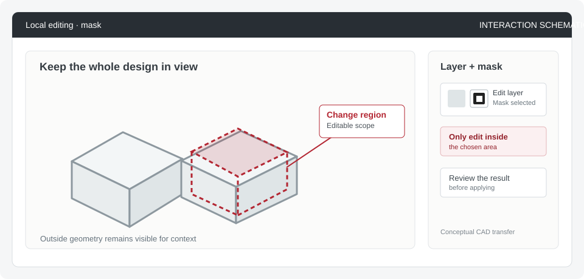
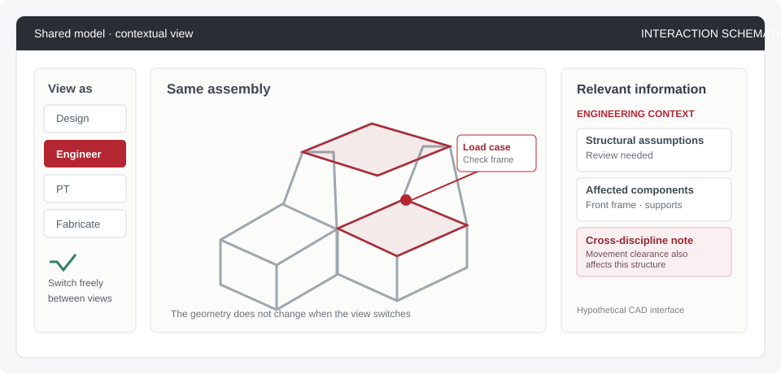

研究机会 · 最新 A-exam 框架
从交互先例发展研究问题
以 2026 年 10 月 A-exam 确立的研究空间为起点： 问题优先／方案优先 × 个人／群体／社区。选择一个具体的设计推理困难，再思考哪种交互机制可以提供支持。下面保留两项早期研究设想，并按照最新框架重新理解，不再主要用已知／未知认识状态分类。
当前状态：尚待验证的研究假设。原产品交互、CAD 迁移设想、证据边界与开放问题分别记录。
研究机会地图
个人 · 问题优先
意识到问题之后，如何继续学习
当反思性问题让设计者意识到某个制造影响后，工具能否进一步支持知识检索、方案评估或实物测试，同时让设计者保有决策权？
由 aCADemy 的研究发现（第 44–47 页）启发，尚未验证。
个人 · 方案优先
跨制造方案迁移方法
比较、局部编辑范围以及已有成功案例，能否帮助设计者考虑更多可行的制造方式，并理解不同选择的后果？
由 CAMeleon 启发的研究拓展，不是已有研究发现。
群体 · 问题优先
跨专业协作中的问题重构
能否让协作者理解工程、临床或使用需求如何改变设计目标，而不要求每个人都直接建模？
受到 FuzzyCAD 研究发现（第 60–63 页）启发的交互设想。
群体 · 方案优先
限定修改范围与情境化审阅
协作者如何说明哪些局部决策仍可修改、哪些条件需要保留，以及定案之前还需要哪些外部信息？
可以参考后文的 Layer Masks 与 Dev Mode 迁移构想。
社区 · 问题优先
针对新使用者与新情境重新理解问题
在复用已有设计时，如何发现新使用者在需求、标准、环境或无障碍条件上的不同，从而重新理解问题？
尚待探索的社区研究问题，目前没有声称已评价的系统。
社区 · 方案优先
可迁移的设计推理
当部分设计推理记录已经遗失时，社区如何结合已有设计、部分依据、测试与约束，将方案适配到新情境？
直接对应未来研究第 65–66 页。
保留的交互草图
两项具体交互迁移设想
下面保留原产品行为与拟议的 CAD 交互流程。以前的已知／未知分析只作为历史记录参考。
Layer Masks（图层蒙版）：局部修改，同时保留整体情境
旧版框架分析： 主要属于 已知的未知问题 类型的交互设想。用户已经意识到某个未解决的局部问题，机制是 分解与修改范围的外化，明确区分可以改变的部分和需要暂时保留的条件。

现有产品交互
在 Photoshop 中，用户可以添加并编辑图层蒙版，选择显示或隐藏图层的局部区域。调整图层上的蒙版可以将修改限定在图像的指定部分，其余区域不受影响，而且蒙版可以继续编辑。
CAD 交互设想（尚待验证）
- 在完整的爬行训练辅助装置模型中选中头部支撑区域。
- 说明探索过程中哪些部分可以改变，周边哪些几何需要保持不变。
- 在其他部件仍然可见的情况下，探索新的头部支撑方案，检查连接与间隙，并在必要时调整允许修改的范围。
- 将修改应用于共享设计之前，先审阅其影响。
值得探索的是： 使用者可以通过类似蒙版的交互定义探索边界和允许修改的区域。但在三维装配中，局部修改可能同时影响区域之外的连接和相邻部件。
开放问题： 这个范围究竟应当限制几何编辑、标记需要保留的设计决策，还是限定系统建议的应用范围？三者并不相同，需要分别研究。
Dev Mode（开发者模式）：从不同工作情境审阅同一设计
2026 版框架映射 · 群体 × 问题优先或方案优先（候选方向）： 切换工作情境可能让协作者发现缺失的评价标准或他人掌握的相关知识，也可能帮助已意识到知识缺口的用户寻求专业意见。候选机制是 视角切换与情境化呈现。

现有产品交互
Figma 提供面向开发者的检查和交接环境。Dev Mode 包含设计检查、具体设计信息与聚焦视图。迁移到 CAD 时，应区分用户所属角色和当前实际需要的推理支持。
CAD 交互设想（尚待验证）
- 打开同一个爬行训练辅助装置模型，选择当前任务情境，例如设计、工程、物理治疗或制造。
- 将相关几何与该任务所需的知识和问题一起呈现，例如工程情境中的结构假设，或物理治疗情境中的接触与运动需求。
- 在不丢失共享模型的情况下切换情境或查看其他专业的信息，不按角色硬性限制可访问内容。
- 将新的发现关联到对应几何，供下一位协作者使用。
值得探索的是： 不同参与者会带着不同的问题审阅同一几何。用户自主切换视图，同时仍能看到跨情境的关联需求。
开放问题： 情境视图如何突出相关信息，又不遮蔽使用者专业范围之外的依赖关系和重要考虑？按任务切换视图不应演变成僵硬的角色权限。
后续先例筛选原则：只有当一项由用户控制的具体交互能够改变设计者操作、检查或探索设计的方式时，才值得进一步记录。界面看起来相似并不足以成为迁移依据。